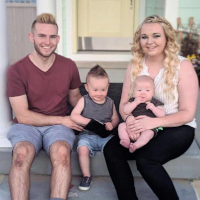

About Me

My name is Nathan Poulson. I am located in Sandy, Ut. I have a beutiful wife and two studdly children. I enjoy being outdoors but also enjoy some quality tv time. A year ago I recieved my Associates degree from Dixie State University in St. George Ut. Shortly after I moved to Sandy and started a coding boot camp course through the University of Utah. I finished that in April of 2020. Through that I learned a great number of skills:
- HTML
- CSS
- JavaScript
- Node
- MySQL
- MongoDB
- React